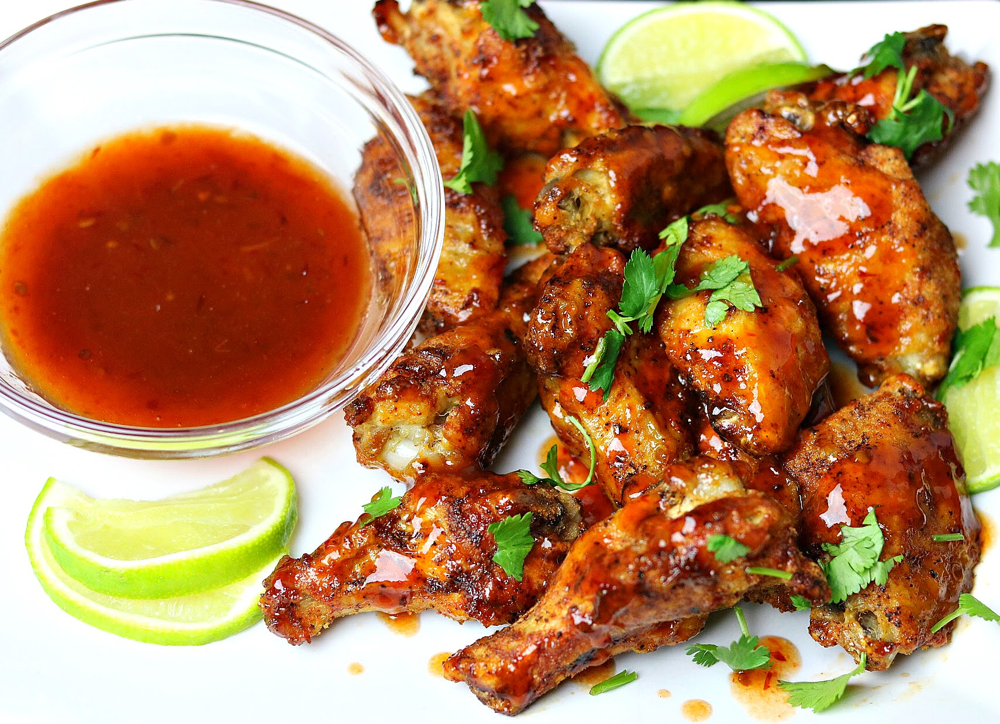

How to Prepare Thai Chicken Wings

Thai Chicken Wings
Thai chicken wings are flavourful, marinated with dry and wet rub of spices. The marinade combines coconut sugar and raw sugar to elevate the savoury flavour. This authentic and easy to make BBQ wings recipe can either be grilled or baked.
Ingredients
- 250g chicken wings
- 0.5 tbsp garlic clove(s)
- 0.25 tbsp coriander root
- 0.25tsp coriander seeds
- 0.125 tsp turmeric powder
- 0.25 white pepper
- 1.25 tbsp Thai seasoning sauce
- 0.5 tbsp light soy sauce
- 1 tsp raw sugar
- 1 tsp salt
- 1.25 tbsp coconut sugar
Steps to Prepare
- Rinse chicken wings to discard dirt. Add salt to the chicken wings. Then, rinse the salt off. Pat the wings dry. Use a knife to make a cut on the back side of each wingette (section before the wingtip). Then, prick the chicken all over with a fork.
- Pound or blend coriander roots, garlic cloves with skin on, and coriander seeds. In a bowl, stir in pounded ingredients along with white pepper powder, turmeric powder, Thai seasoning sauce, light soy sauce, raw sugar, salt and coconut sugar. Add chicken wings and mix well. Leave to marinate in the refrigerator for at least 3 hours.
- Remove chicken wings from the marinade. Discard any chunks clinging onto the wings. Preheat halogen hot air oven at 180 degrees Celsius for 35 to 40 minutes. When using a convection oven, cook them at 160 degrees Celsius with the fan on. Flip every 10-15 minutes until the chicken wings are ready.